Staying fit and healthy can help you stay emotionally healthy too. Meaning you wouldn't be as depressed or stressed as you usually are because your brain is now occupied doing exercises.Your body will be strong and you will be able to cope will those illnesses. Eating the right food and getting the right amount of sleep can also help you to stay fit.
Here are some exercises you can do to help you stay or get in shape.
Dips
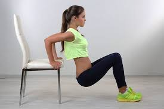Side Leg Raises
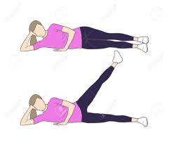Jumping Lunges
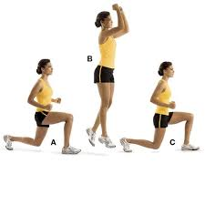Cardio Squats
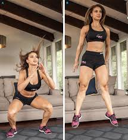Jump Rope
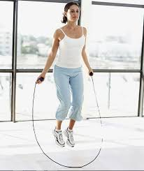Plank Leg Raises
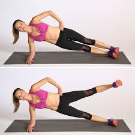Weighted Shoulder Press
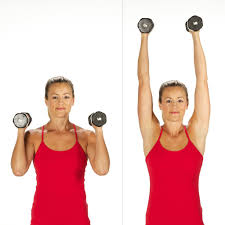V Sit and Twist
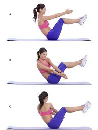Sit Ups
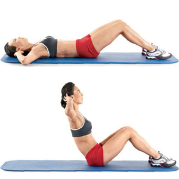You can also follow along with these videos if you need a step by step example
These are the best stores or websites you can go to to purchase the comfiest workout clothing.
~Old Navy
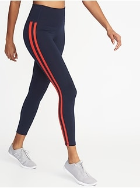~Target
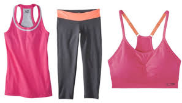~Jcpenney
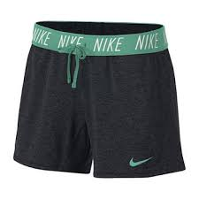~Forever 21
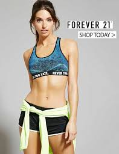~Danskin
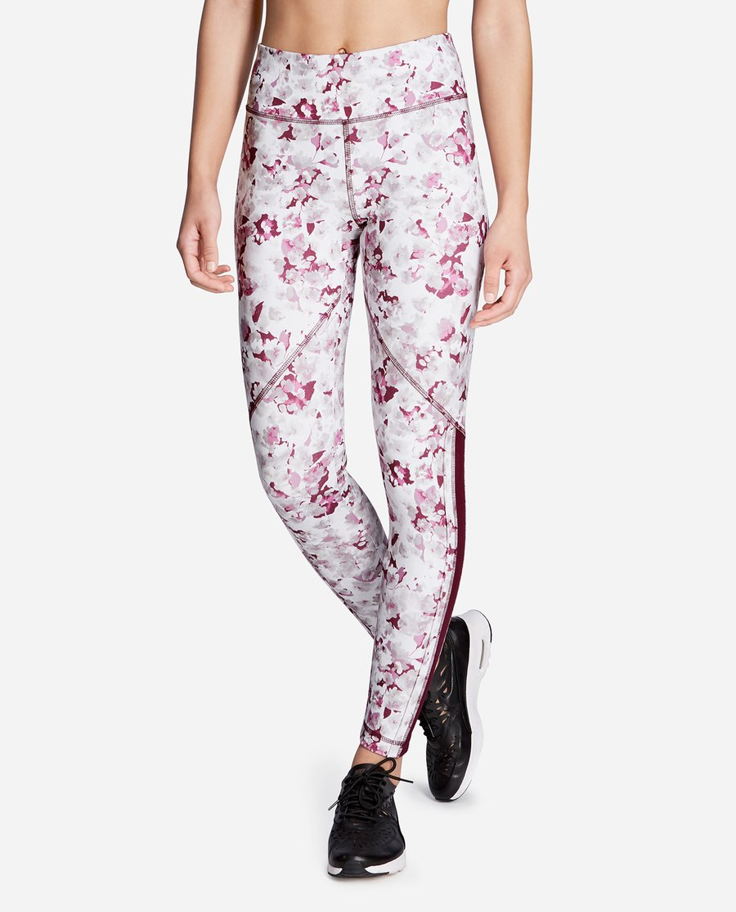~Nike
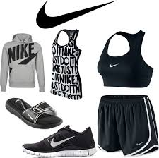~Under Armour
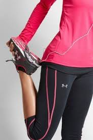~Dicks Sporting Goods
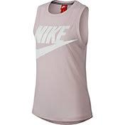~Eblens
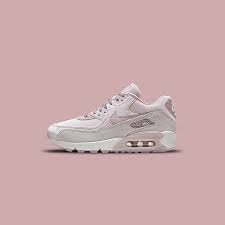~Lady's Footlocker
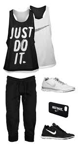~Lululemon.com
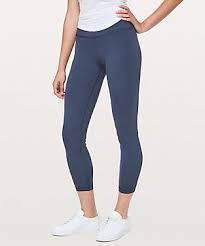~Fabletics.com
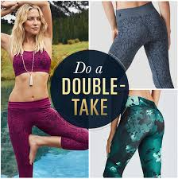